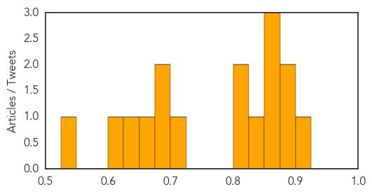
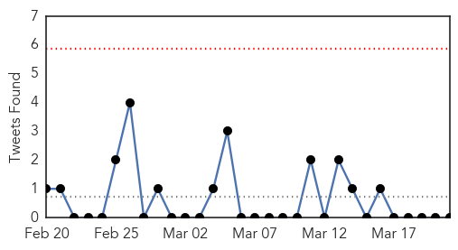

Meningitis
30-Day Web Trend
4 alerts, 0 warnings

30-Day Twitter Trend
1 alerts, 0 warnings

Article Locations

Article Confidences
Top Articles:
- 0.915
- Meningitis B Vaccine for UK Infants Backed by Experts
- 0.883
- Babies to get meningitis B vaccination
- 0.881
- Meningitis B Vaccine To Be Free For Babies
- 0.865
- Q&A: Meningitis B vaccine
- 0.855
- Meningitis vaccinations recommended for all Scottish children
- 0.851
- New meningitis jab for every child on NHS as vaccines committee reverses its advice
- 0.845
- Wind and dust can predict Sahel meningitis outbreaks – scientists
- 0.818
- New meningitis B vaccine offers hope to children
- 0.815
- Call for meningitis vaccine to be made available
- 0.709
- Meningitis B vaccine set to be added to routine schedule
- 0.698
- Babies to get meningitis B vaccine this summer and teenagers could be next
- 0.681
- 'U-turn' over meningitis B vaccine
- 0.672
- Meningitis B vaccine to made available for babies
- 0.649
- Britain could be the first country in the world to vaccinate every baby against meningitis B
- 0.609
- Pathogens in Cheese Researchers Follow the Traces of Deadly Bacteria
- 0.534
- Novartis vaccine Bexsero recommended for use in Britain
Top Tweets:
-
No tweets found for Mar 21, 2014
Unknown
30-Day Web Trend
0 alerts, 0 warnings

30-Day Twitter Trend
0 alerts, 0 warnings

Article Locations

Article Confidences

Top Articles:
- 0.982
- Parents warned that number of cases of scarlet fever at a 24 year high
- 0.982
- Is closure of hostels correct way to tackle jaundice?
- 0.971
- CDC confirms death from meningococcal disease at Drexel University
- 0.945
- Classical Swine Fever Under Control in Colombia
- 0.941
- TB Latest: Produce World of Chatteris says TB outbreak NOT at one of their factories and has “robust” policies to deal with illness
- 0.931
- Different flu strain hitting RI residents
- 0.917
- Chicago Tribune
- 0.917
- Chicago Tribune
- 0.917
- Chicago Tribune
- 0.917
- Chicago Tribune
- 0.917
- Chicago Tribune
- 0.917
- Chicago Tribune
- 0.917
- Chicago Tribune
- 0.910
- The world windows to Thailand
- 0.866
- North Korea fires 30 short-range rockets -Yonhap
- 0.866
- Chad fines CNPC unit $1.2 bln for environmental damage
- 0.866
- Western sanctions could raise Russia's borrowing costs
- 0.866
- Three dead, eight injured in fire at Jersey Shore motel
- 0.866
- Russia will respond in kind to U.S. sanctions
- 0.866
- Russian anti-narcotics body says U.S. sanctions will halt cooperation
- 0.866
- Putin promises to protect, patronise bank hit by U.S. sanctions
- 0.866
- Russia's Medvedev says Ukraine owes Russia $16 bln
- 0.866
- Timchenko's Stroitransgaz to build South Stream pipe in Bulgaria-sources
- 0.866
- Russia's Novatek shares fall 12 pct over U.S. sanctions
- 0.866
- Russia says sanctions unlawful, will create barriers
- 0.866
- Malaysia says no confirmation yet of suspected jet debris
- 0.866
- A police helicopter drops water on a forest fire on Runstboden mountain in the western Austrian village of Absam
- 0.837
- Drug-resistant TB a "global health security risk," WHO says
- 0.821
- DOH doctor says “no pink eye here” in the meantime Samoa issues health alert
- 0.753
- Equatorial Guinea reports polio case, first since 1999
- 0.727
- Water crisis hits Parirenyatwa Hospital
- 0.723
- Deadly pig virus numbers rise in US hog herd
- 0.717
- Contagious virus infecting Minnesota horses
- 0.680
- Not just the gut: negative relationships, fatigue are more powerful than symptoms in IBS patients' health perceptions
- 0.657
- NGO Tackles Leading Cause of Blindness, Trachoma
- 0.637
- RN talks nursing and numbers
- 0.618
- RI residents warned about differing flu strain
- 0.600
- Investigators Still Baffled By Polio-Like Illness In California Children
- 0.584
- 26m Bangladeshis deprived of ‘improved’ water
- 0.545
- The Untold Story of the Ghanaian TB Patient
- 0.520
- World´s poorest have least access to safe water: UNICEF CCTV News
- 0.509
- Reaching Migrants is Key to Success in the Global Fight against TB: IOM - World
Top Tweets:
-
No tweets found for Mar 21, 2014